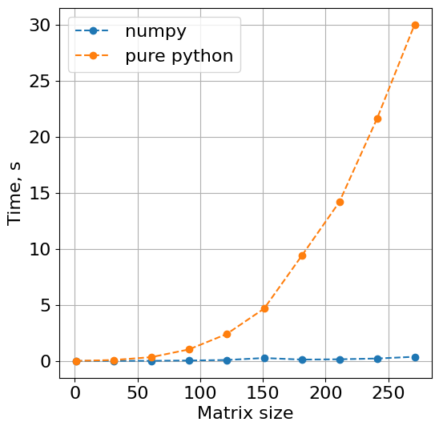

Efficient AI
Блок 1. Матричное умножение. Аппаратные методы ускорения


Где мы?
- Вводная
- Блок 1
- Блок 2
- 1 мая
- 9 мая
- Блок 3
- Экзамен
Содержание
- Немного C++
- Вычисления на CPU
- Распараллеливание
- Вычисления на GPU
Почему C++?
pure python
for i in range(a.shape[0]):
for j in range(b.shape[1]):
for k in range(a.shape[1]):
c[i,j] += a[i,k]*b[k,j]
numpy
import numpy as np
c = np.matmul(a,b)

- Python — интерпретируемый язык
- C/C++ — компилируемые языки
- numpy написана на C (C extension)
C++ широко применяется в БД, движках, ИИ...
Этапы сборки на C++
Препроцессинг ➝
Компиляция ➝
Ассемблирование ➝
Компоновка
Оптимизация
- -O0 — дефолт, без оптимизации.
- -O1 — пытается уменьшить размер кода и ускорить работу программы за счет увеличения времени компиляции.
- -O2 — все поддерживаемые оптимизации, которые не включают уменьшение времени исполнения за счет увеличения длины кода.
- -O3 — оптимизирует еще немного за счет увеличения длины кода.
- -march=native — для gcc>4.3 специфичные архитектурные оптимизации.
Предупреждения
- -Wall — вывод сообщений о всех предупреждениях или ошибках, возникающих во время компиляции программы.
- -Werror — делает предупреждения ошибками. ☠️
Отладка
- -g — генерация и сохранение отладочной информации.
- -fsanitize=address — умеет ловить использование освобожденной памяти, переполнения и утечки.
Сегменты памяти
- text — хранятся машинные инструкции
- data — сегмент инициализированных данных
- stack — быстрая но маленькая память
- heap — динамическая память
cat /procs/self/maps — посмотреть фрагменты памяти процесса self.
Хранение матриц в памяти
непоследовательная аллокация памяти
float** A = new float*[N];
for (size_t i = 0; i < N; ++i) { A[i]=new float[N](0.f); }
A[i][j]=1.f;
последовательная аллокация памяти
float* A = new float[N * N](0.f);
A[i*N+j]=1.f;

- Когда процессор запрашивает один байт данных, загружается вся кэш-линия
- Локальность данных увеличивает cache hit
- Неудачное расположение данных приводит к cache miss
- Эффективная алгоритм должен учитывать размеры кэшей
Информация о кэшах
- Windows — Ctrl+Shift+Esc
- Linux —
lscpu | grep cacheилиgetconf -a | grep CACHE
Intel(R) Core(TM) i5-9300HF @ 2.40GHz
L1d cache: 128 KiB (4 instances)
L1i cache: 128 KiB (4 instances)
L2 cache: 1 MiB (4 instances)
L3 cache: 8 MiB (1 instance)
LEVEL1_ICACHE_LINESIZE 64
LEVEL2_DCACHE_LINESIZE 64
LEVEL3_DCACHE_LINESIZE 64
библиотеки BLAS (Basic Linear Algebra Subprograms)
- Intel MKL — для Intel CPU
- Accelerate — для Apple CPU
- BLIS, GotoBLAS, OpenBLAS — opensource, multi-vendor CPU
- cuBLAS — для NVIDIA GPU
Уровень 1 содержит векторные операции вида:
\[\boldsymbol{y} \leftarrow \alpha \boldsymbol{x} + \boldsymbol{y}.\]
Уровень 2 содержит операции матрица-вектор вида:
\[\boldsymbol{y} \leftarrow \alpha A \boldsymbol{x} + \beta \boldsymbol{y}.\]
Уровень 3 содержит операции матрица-матрица вида:
\[C \leftarrow \alpha A B + \beta C.\]
Оптимизируем матмул
void gemm_v0(int M, int N, int K, const float * A, const float * B, float * C)
{
for (int i = 0; i < M; ++i)
{
for (int j = 0; j < N; ++j)
{
C[i*N + j] = 0;
for (int k = 0; k < K; ++k)
C[i*N + j] += A[i*K + k] * B[k*N + j];
}
}
}
Есть ли разница — перемножать $A \cdot B$ или $A \cdot B^T$?
void gemm_v1(int M, int N, int K, const float * A, const float * B, float * C)
{
for (int i = 0; i < M; ++i)
{
float * c = C + i * N;
for (int j = 0; j < N; ++j)
c[j] = 0;
for (int k = 0; k < K; ++k)
{
const float * b = B + k * N;
float a = A[i*K + k];
for (int j = 0; j < N; ++j)
c[j] += a * b[j];
}
}
}
Векторизация циклов
- MISD — Multiple Instruction stream, Single Data (конвейер)
- SIMD — Single Instruction Multiple Data
- AVX/AVX2/AVX-512 — Advanced Vector Extensions, набор инструкций для x86 Intel/AMD. Отличаются набором команд и размером регистров (128/256/512 бит)
- FMA — Fused Multiply-Add, аналогично

#include <immintrin.h>
Хорошая новость — компиляторы векторизуют код автоматически при возможности
Увеличение числа чтений из регистров

Количество чтений уменьшилось с $2 K m_R n_R$ до $(m_R+n_R)K+m_Rn_R$
Перерыв
Как можно ускорить имеющуюся программу?
- Закон Мура (1965) — количество транзисторов, размещаемых на кристалле интегральной схемы, удваивается каждые 24 месяца
- Закон масштабирования Деннарда (1974) — уменьшая размеры транзистора и повышая тактовую частоту процессора, возможно пропорционально повышать производительность
- Размер современных транзисторов достиг физических ограничений
- Увеличение тактовой частоты приводит к большому тепловыделению
С 2006~2007 года закон масштабирования Деннарда перестал выполняться
Закон Мура продолжает работать
Выход — многоядерные процессоры и параллельное программирование
☠️
Concurrency vs. Parallelism
Конкурентность:
- Операционная система
- Python GIL (Global Interpreter Lock)
std::thread (С++11)
OPENMP (Open Multi-Processing)
- Открытый стандарт для распараллеливания программ на языках C/C++/Fortran
- Высокоуровневая надстройка над pthreads
- Ведущий поток создаёт набор ведомых потоков, и задача распределяется между ними
- Модель общей памяти
#pragma omp directive-name [опция[[,] опция]...]-
#pragma omp parallel for if(N>100) numthreads(3) shared(a, b, c) private(i) for (i = 0; i < N; i++) c[i] = a[i] + b[i]; - Пример компиляции:
g++ -O2 --std=c++20 -o test -fopenmp main.cppicc -O2 --std=c++20 -o test -openmp main.cpp
Может ли реализация для трех нитей дать ускорее более чем в 3 раза?
Фактически да, сверхлинейность из-за более эффективного использования кэшей
MPI (Message Passing Interface)
CUDA
История CUDA (Compute Unified Device Architecture)
- 1999 - первая GPU GeForce 256 для обработки графики
- Большое количество пикселей/вершин/текстур/освещения
- 2007 - CUDA для GPGPU (General-purpose computing for graphics processing units)
- Архитектура хорошо подходит для задач с большим уровнем параллелизма по данным
 24 ядра < 10000 ядер?
24 ядра < 10000 ядер?
Ключевые понятия
- Host - CPU
- Device - GPU
- Kernel - функция, исполняемая на GPU

Интерфейс
- Спецификаторы функций
- __host__ - вызываются с хоста, выполняются на хосте
- __global__ - вызываются с хоста, выполняются на устройстве
- __device__ – вызываются с устройства, выполняются на устройстве.
- threadIdx - индекс текущей нити (3dim)
- blockIdx - индекс текущего блока (3dim)
- blockDim - размеры блока (3dim)
- gridDim - размеры сетки (3dim)
myKernelFunc<<<gridSize, blockSize>>>(float *param1, int *param2)- вызов кернела
Пример
// ядро
__global__ void add( int *a, int *b, int *c ) {
*c = *a + *b;
}
...
// переменные на CPU
int a, b, c;
// переменные на GPU
int *dev_a, *dev_b, *dev_c;
int size = sizeof( int ); //размерность
// выделяем память на GPU
cudaMalloc( (void**)&dev_a, size );
cudaMalloc( (void**)&dev_b, size );
cudaMalloc( (void**)&dev_c, size );
// инициализация переменных
a = 2;
b = 7;
// копирование информации с CPU на GPU
cudaMemcpy( dev_a, &a, size, cudaMemcpyHostToDevice );
cudaMemcpy( dev_b, &b, size, cudaMemcpyHostToDevice );
// вызов ядра
add<<< 1, 1 >>>( dev_a, dev_b, dev_c );
// копирование результата работы ядра с GPU на CPU
cudaMemcpy( &c, dev_c, size, cudaMemcpyDeviceToHost );
// вывод информации
printf("%d + %d = %d\n", a, b, c);
// очищение памяти на GPU
cudaFree( dev_a );
cudaFree( dev_b );
cudaFree( dev_c );
Архитектура GPU

- Регистры и разделяемая память - быстрые.
- Глобальная, константная, текстурная - медленные
- Регистры, локальная память - свои для каждой нити
- Разделяемая - общая память на блок
- Если данные не попадают в регистр, то используется локальная память, а она медленная, по физическому расположению и скорости доступа близка к глобальной
Синхронизация потоков GPU
- Нити разных блоков взаимодействовать между собой не могут
- Нити одного блока могут взаимодействовать через разделяемую
__shared__память __syncthreads()- потоки приостанавливаются до того момента, пока все потоки не достигнут этой точки- Warp - группировка потоков по 32 штуки
- В каждый момент времени все ядра одного SM исполняют строго один варп
Оптимизация матмула
__global__ void matrixMult(const BASE_TYPE *A, const BASE_TYPE *B, BASE_TYPE *C, int Acols, int Bcols)
{
int i0 = Acols * (blockDim.y * blockIdx.y +
threadIdx.y);
int j0 = blockDim.x * blockIdx.x + threadIdx.x;
BASE_TYPE sum = 0;
for (int k = 0; k < Acols; k++)
sum += A[i0 + k] * B[k * Bcols + j0];
int ind = Bcols * (blockDim.y * blockIdx.y +
threadIdx.y) + blockDim.x * blockIdx.x + threadIdx.x;
C[ind] = sum;
}
- Большую часть времени работы программы занимает доступ к глобальной памяти, а не вычисления
- Суть оптимизаций - такая же, локализация данных, в данном случае через shared память

$2N$ -> $2N/$blocksize
Вопросы
- Какое максимально возможное ускорение на GPU? Количество мультипроцессоров * 32
- Как выбрать размер блока для кернела? Есть известные строгие ограничения, а оптимальный размер зачастую определяется бенчмарками
- Как влияет тип данных double/float на скорость работы? В регистр на место одного double влезает 2 float
Гетерогенные системы

Пример State-of-the-art комбинации CPU/GPU в LLM: Powerinfer